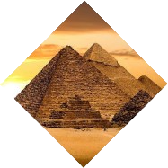
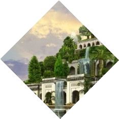
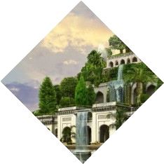
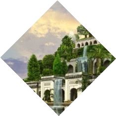
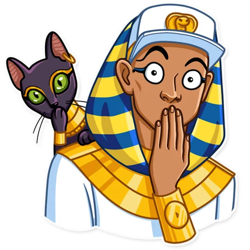

Чудеса
света
Какие именно?

 


Семь чудес света – это рукотворные древние сооружения, которые многие тысячелетия поражают людей своими масштабами и искусной архитектурой. Первый список составил ещё древнегреческий историк Геродот, правда, в него входили лишь три сооружения. Более привычный нам список из семи локаций описал греческий поэт Антипатр Сидонский во II веке до нашей эры
Где находились?

Пирамида Хеопса
Висячие сады Семирамиды
Статуя Зевса в Олимпии
Храм Артемиды
Мавзолей Мавсола
Статуя Колосса Родосского
Александрийский маяк


